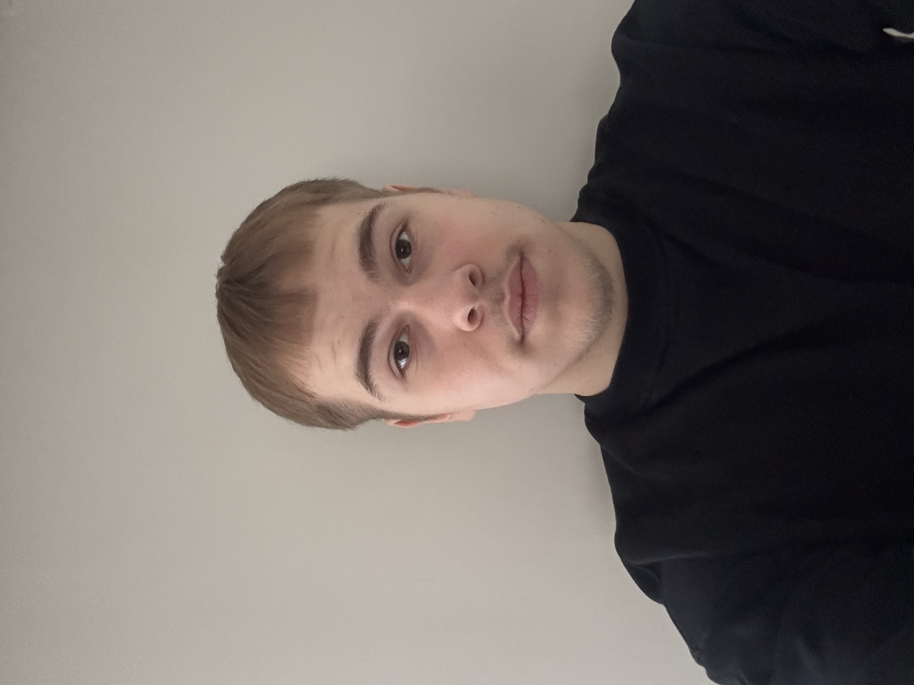

Wie ben ik?

Mijn naam is Noah Van Herreweghe en ik studeer momenteel Graduaat Programmeren aan Thomas More in Lier. Ik heb een grote interesse in softwareontwikkeling. Op deze website kan u meer informatie vinden over mij.
Waar ben ik goed en minder goed in?
- ✔ Probleemoplossend denken
- ✔ Nieuwe dingen willen leren
- ✔ Samenwerken in team
- ➖Soms te lang zoeken naar de perfecte oplossing
Mijn interesses
Mijn interesses liggen vooral in programmeren en softwareontwikkeling. Ik vind het interessant om nieuwe programmeertalen en tools te ontdekken. In mijn vrije tijd houd ik mij bezig met verschillende hobby’s zoals gamen en sporten.
Meer hierover kan u lezen op de pagina Hobby's en Interesses.
Mijn studies
Momenteel volg ik de opleiding Graduaat Programmeren aan Thomas More in Lier. Tijdens deze opleiding leer ik verschillende programmeertalen, webontwikkeling en softwareontwikkeling.
Meer details over mijn studies en ervaring kan u bekijken op de pagina Ervaring.